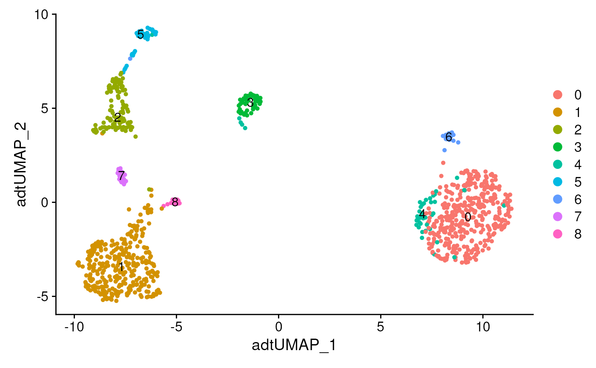
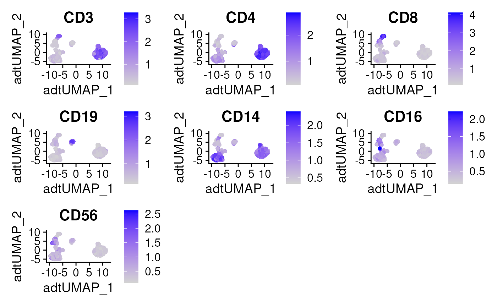
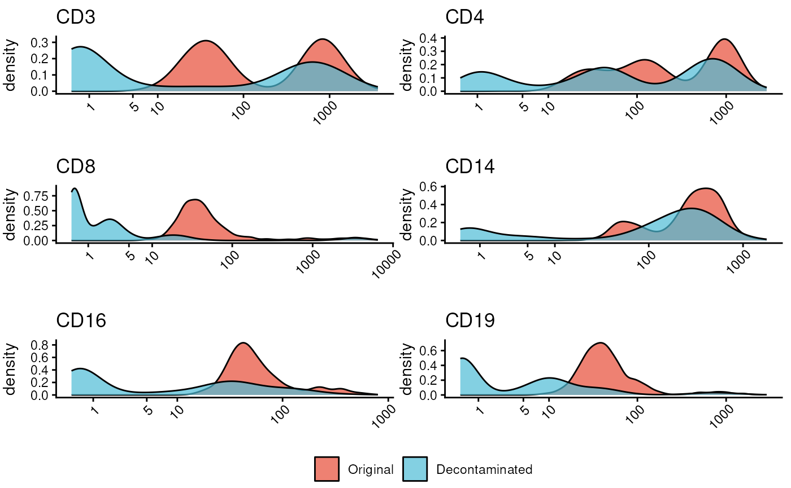
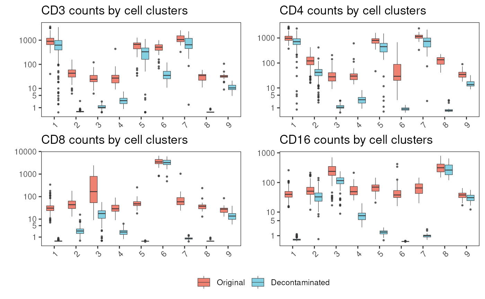

decontPro.RmdDecontPro assess and decontaminate single-cell protein expression data, such as those generated from CITE-seq or Total-seq. The count matrix is decomposed into three matrices, the native, the ambient and the background that represent the contribution from the true protein expression on cells, the ambient material and other non-specific background contamination.
DecontX Package can be installed from Bioconductor:
if (!requireNamespace("BiocManager", quietly = TRUE)) {
install.packages("BiocManager")
}
BiocManager::install("decontX")Then the package can be loaded in R using the following command:
library(decontX)To see the latest updates and releases or to post a bug, see our GitHub page at https://github.com/campbio/decontX.
Here we use an example dataset from SingleCellMultiModal
package.
library(SingleCellMultiModal)
dat <- CITEseq("cord_blood", dry.run = FALSE)
#> Warning: 'ExperimentList' contains 'data.frame' or 'DataFrame',
#> potential for errors with mixed data types
counts <- experiments(dat)$scADTFor this tutorial, we sample only 1000 droplets from the dataset to
demonstrate the use of functions. When analyzing your dataset,
sub-sampling should be done with caution, as decontPro
approximates contamination profile using the dataset. A biased sampling
may introduce bias to the contamination profile approximation.
decontPro requires a vector indicating the cell types of
each droplet. Here we use Seurat for clustering.
library(Seurat)
library(dplyr)
adt_seurat <- CreateSeuratObject(counts_sample, assay = "ADT")
#> Warning: Data is of class matrix. Coercing to dgCMatrix.
adt_seurat <- NormalizeData(adt_seurat, normalization.method = "CLR", margin = 2) %>%
ScaleData(assay = "ADT") %>%
RunPCA(assay = "ADT", features = rownames(adt_seurat), npcs = 10,
reduction.name = "pca_adt") %>%
FindNeighbors(dims = 1:10, assay = "ADT", reduction = "pca_adt") %>%
FindClusters(resolution = 0.5)
#> Warning: Requested number is larger than the number of available items (13).
#> Setting to 13.
#> Warning: Requested number is larger than the number of available items (13).
#> Setting to 13.
#> Warning: Requested number is larger than the number of available items (13).
#> Setting to 13.
#> Warning: Requested number is larger than the number of available items (13).
#> Setting to 13.
#> Warning: Requested number is larger than the number of available items (13).
#> Setting to 13.
#> Modularity Optimizer version 1.3.0 by Ludo Waltman and Nees Jan van Eck
#>
#> Number of nodes: 1000
#> Number of edges: 32498
#>
#> Running Louvain algorithm...
#> Maximum modularity in 10 random starts: 0.8567
#> Number of communities: 9
#> Elapsed time: 0 seconds
adt_seurat <- RunUMAP(adt_seurat,
dims = 1:10,
assay = "ADT",
reduction = "pca_adt",
reduction.name = "adtUMAP",
verbose = FALSE)
DimPlot(adt_seurat, reduction = "adtUMAP", label = TRUE)
FeaturePlot(adt_seurat,
features = c("CD3", "CD4", "CD8", "CD19", "CD14", "CD16", "CD56"))
clusters <- as.integer(Idents(adt_seurat))You can run DecontPro by simply:
Priors (delta_sd and background_sd) may
need tuning with the help of plotting the decontaminated results. The
two priors encode belief if a more spread-out count should be considered
contamination vs. native. We tested the default values on datasets
ranging 5k to 10k droplets and 10 to 30 ADTs and the results are
reasonable. A more contaminated or a smaller dataset may need larger
priors. In this tutorial, since we sampled only 1k droplets from the
original 10k droplets, we use slightly larger priors:
counts <- as.matrix(counts_sample)
out <- decontPro(counts,
clusters,
delta_sd = 2e-4,
background_sd = 2e-5)
#> Chain 1: ------------------------------------------------------------
#> Chain 1: EXPERIMENTAL ALGORITHM:
#> Chain 1: This procedure has not been thoroughly tested and may be unstable
#> Chain 1: or buggy. The interface is subject to change.
#> Chain 1: ------------------------------------------------------------
#> Chain 1:
#> Chain 1:
#> Chain 1:
#> Chain 1: Gradient evaluation took 0.009313 seconds
#> Chain 1: 1000 transitions using 10 leapfrog steps per transition would take 93.13 seconds.
#> Chain 1: Adjust your expectations accordingly!
#> Chain 1:
#> Chain 1:
#> Chain 1: Begin eta adaptation.
#> Chain 1: Iteration: 1 / 250 [ 0%] (Adaptation)
#> Chain 1: Iteration: 50 / 250 [ 20%] (Adaptation)
#> Chain 1: Iteration: 100 / 250 [ 40%] (Adaptation)
#> Chain 1: Iteration: 150 / 250 [ 60%] (Adaptation)
#> Chain 1: Iteration: 200 / 250 [ 80%] (Adaptation)
#> Chain 1: Success! Found best value [eta = 1] earlier than expected.
#> Chain 1:
#> Chain 1: Begin stochastic gradient ascent.
#> Chain 1: iter ELBO delta_ELBO_mean delta_ELBO_med notes
#> Chain 1: 100 -513832879.079 1.000 1.000
#> Chain 1: 200 -7192008.793 35.722 70.445
#> Chain 1: 300 -347838.122 30.374 19.676
#> Chain 1: 400 -253383.045 22.874 19.676
#> Chain 1: 500 -228763.670 18.320 1.000
#> Chain 1: 600 -214481.186 15.278 1.000
#> Chain 1: 700 -208941.224 13.099 0.373
#> Chain 1: 800 -204635.947 11.464 0.373
#> Chain 1: 900 -201011.587 10.193 0.108
#> Chain 1: 1000 -199376.334 9.174 0.108
#> Chain 1: 1100 -198748.896 8.340 0.067 MAY BE DIVERGING... INSPECT ELBO
#> Chain 1: 1200 -198094.401 7.646 0.067 MAY BE DIVERGING... INSPECT ELBO
#> Chain 1: 1300 -197608.584 7.058 0.027 MAY BE DIVERGING... INSPECT ELBO
#> Chain 1: 1400 -197015.589 6.554 0.027 MAY BE DIVERGING... INSPECT ELBO
#> Chain 1: 1500 -196562.589 6.117 0.021 MAY BE DIVERGING... INSPECT ELBO
#> Chain 1: 1600 -196362.533 5.735 0.021 MAY BE DIVERGING... INSPECT ELBO
#> Chain 1: 1700 -196119.605 5.398 0.018 MAY BE DIVERGING... INSPECT ELBO
#> Chain 1: 1800 -196050.018 5.098 0.018 MAY BE DIVERGING... INSPECT ELBO
#> Chain 1: 1900 -195912.599 4.829 0.008 MEDIAN ELBO CONVERGED MAY BE DIVERGING... INSPECT ELBO
#> Chain 1:
#> Chain 1: Drawing a sample of size 1000 from the approximate posterior...
#> Chain 1: COMPLETED.
#> Warning: Pareto k diagnostic value is 41.78. Resampling is disabled. Decreasing
#> tol_rel_obj may help if variational algorithm has terminated prematurely.
#> Otherwise consider using sampling instead.The output contains three matrices, and model parameters after
inference. decontaminated_counts represent the true protein
expression on cells.
decontaminated_counts <- out$decontaminated_countsPlot ADT density before and after decontamination. For bimodal ADTs, the background peak should be removed. Note CD4 is tri-modal with the intermediate mode corresponding to monocytes. This can be used as a QC metric for decontamination as only the lowest mode should be removed.
plotDensity(counts,
decontaminated_counts,
c("CD3", "CD4", "CD8", "CD14", "CD16", "CD19"))
#> Warning: `aes_string()` was deprecated in ggplot2 3.0.0.
#> ℹ Please use tidy evaluation idioms with `aes()`.
#> ℹ See also `vignette("ggplot2-in-packages")` for more information.
#> ℹ The deprecated feature was likely used in the decontX package.
#> Please report the issue to the authors.
#> This warning is displayed once per session.
#> Call `lifecycle::last_lifecycle_warnings()` to see where this warning was
#> generated.
We can also visualize the decontamination by each cell cluster.
plotBoxByCluster(counts,
decontaminated_counts,
clusters,
c("CD3", "CD4", "CD8", "CD16"))
sessionInfo()
#> R version 4.6.1 (2026-06-24)
#> Platform: x86_64-pc-linux-gnu
#> Running under: Ubuntu 24.04.4 LTS
#>
#> Matrix products: default
#> BLAS: /usr/lib/x86_64-linux-gnu/openblas-pthread/libblas.so.3
#> LAPACK: /usr/lib/x86_64-linux-gnu/openblas-pthread/libopenblasp-r0.3.26.so; LAPACK version 3.12.0
#>
#> locale:
#> [1] LC_CTYPE=en_US.UTF-8 LC_NUMERIC=C
#> [3] LC_TIME=en_US.UTF-8 LC_COLLATE=en_US.UTF-8
#> [5] LC_MONETARY=en_US.UTF-8 LC_MESSAGES=en_US.UTF-8
#> [7] LC_PAPER=en_US.UTF-8 LC_NAME=C
#> [9] LC_ADDRESS=C LC_TELEPHONE=C
#> [11] LC_MEASUREMENT=en_US.UTF-8 LC_IDENTIFICATION=C
#>
#> time zone: Etc/UTC
#> tzcode source: system (glibc)
#>
#> attached base packages:
#> [1] stats4 stats graphics grDevices utils datasets methods
#> [8] base
#>
#> other attached packages:
#> [1] dplyr_1.2.1 Seurat_6.0.0
#> [3] SeuratObject_5.4.0 sp_2.2-4
#> [5] SingleCellMultiModal_1.24.0 MultiAssayExperiment_1.38.0
#> [7] SummarizedExperiment_1.42.0 Biobase_2.72.0
#> [9] GenomicRanges_1.64.0 Seqinfo_1.2.0
#> [11] IRanges_2.46.0 S4Vectors_0.50.3
#> [13] BiocGenerics_0.58.1 generics_0.1.4
#> [15] MatrixGenerics_1.24.0 matrixStats_1.5.0
#> [17] decontX_1.10.0 BiocStyle_2.40.0
#>
#> loaded via a namespace (and not attached):
#> [1] RColorBrewer_1.1-3 tensorA_0.36.2.1
#> [3] jsonlite_2.0.0 magrittr_2.0.5
#> [5] magick_2.9.1 farver_2.1.2
#> [7] rmarkdown_2.32 fs_2.1.0
#> [9] ragg_1.5.2 vctrs_0.7.3
#> [11] memoise_2.0.1 BiocBaseUtils_1.14.2
#> [13] htmltools_0.5.9 S4Arrays_1.12.1
#> [15] distributional_0.9.0 curl_7.1.0
#> [17] AnnotationHub_4.2.2 SparseArray_1.12.3
#> [19] sass_0.4.10 sctransform_0.4.3
#> [21] parallelly_1.50.0 StanHeaders_2.39.1.1
#> [23] KernSmooth_2.23-26 bslib_0.12.0
#> [25] htmlwidgets_1.6.4 desc_1.4.3
#> [27] ica_1.0-3 httr2_1.3.0
#> [29] plyr_1.8.9 cachem_1.1.0
#> [31] igraph_2.3.4 lifecycle_1.0.5
#> [33] pkgconfig_2.0.3 Matrix_1.7-6
#> [35] R6_2.6.1 fastmap_1.2.0
#> [37] future_1.82.0 digest_0.6.39
#> [39] AnnotationDbi_1.74.0 patchwork_1.3.2
#> [41] RSpectra_0.16-2 irlba_2.4.1
#> [43] ExperimentHub_3.2.2 textshaping_1.0.5
#> [45] RSQLite_3.53.3 labeling_0.4.3
#> [47] filelock_1.0.3 progressr_1.1.0
#> [49] httr_1.4.9 abind_1.4-8
#> [51] compiler_4.6.1 bit64_4.8.6
#> [53] withr_3.0.3 backports_1.5.1
#> [55] S7_1.0.0 inline_0.3.21
#> [57] DBI_1.3.0 fastDummies_1.7.6
#> [59] QuickJSR_1.11.0 pkgbuild_1.4.8
#> [61] MASS_7.3-66 rappdirs_0.3.4
#> [63] DelayedArray_0.38.2 rjson_0.2.23
#> [65] loo_2.10.1 tools_4.6.1
#> [67] otel_0.2.0 future.apply_1.21.0
#> [69] MCMCprecision_0.4.2 glue_1.8.1
#> [71] grid_4.6.1 checkmate_2.3.4
#> [73] Rtsne_0.17 cluster_2.1.8.3
#> [75] reshape2_1.4.5 gtable_0.3.6
#> [77] XVector_0.52.0 RcppAnnoy_0.0.23
#> [79] ggrepel_0.9.8 RANN_2.6.3
#> [81] BiocVersion_3.23.1 pillar_1.11.1
#> [83] stringr_1.6.0 spam_2.11-4
#> [85] RcppHNSW_0.7.0 posterior_1.8.0
#> [87] BiocFileCache_3.2.0 lattice_0.22-9
#> [89] bit_4.6.0 tidyselect_1.2.1
#> [91] SingleCellExperiment_1.34.0 Biostrings_2.80.2
#> [93] pbapply_1.7-5 knitr_1.52
#> [95] gridExtra_2.3.1 bookdown_0.48
#> [97] scattermore_1.2 xfun_0.60
#> [99] pls_2.9-0 rstan_2.32.7
#> [101] stringi_1.8.9 yaml_2.3.12
#> [103] evaluate_1.0.5 codetools_0.2-20
#> [105] tibble_3.3.1 BiocManager_1.30.27
#> [107] cli_3.6.6 uwot_0.2.5
#> [109] RcppParallel_6.2.1 systemfonts_1.3.2
#> [111] jquerylib_0.1.4 Rcpp_1.1.2
#> [113] globals_0.20.0 dbplyr_2.6.0
#> [115] png_0.1-9 parallel_4.6.1
#> [117] rstantools_2.7.1 pkgdown_2.2.1
#> [119] ggplot2_4.0.4 blob_1.3.0
#> [121] dotCall64_1.2 SpatialExperiment_1.22.0
#> [123] listenv_1.1.0 scales_1.4.0
#> [125] ggridges_0.5.7 purrr_1.2.2
#> [127] crayon_1.5.3 combinat_0.0-9
#> [129] rlang_1.3.0 KEGGREST_1.52.2
#> [131] cowplot_1.2.0